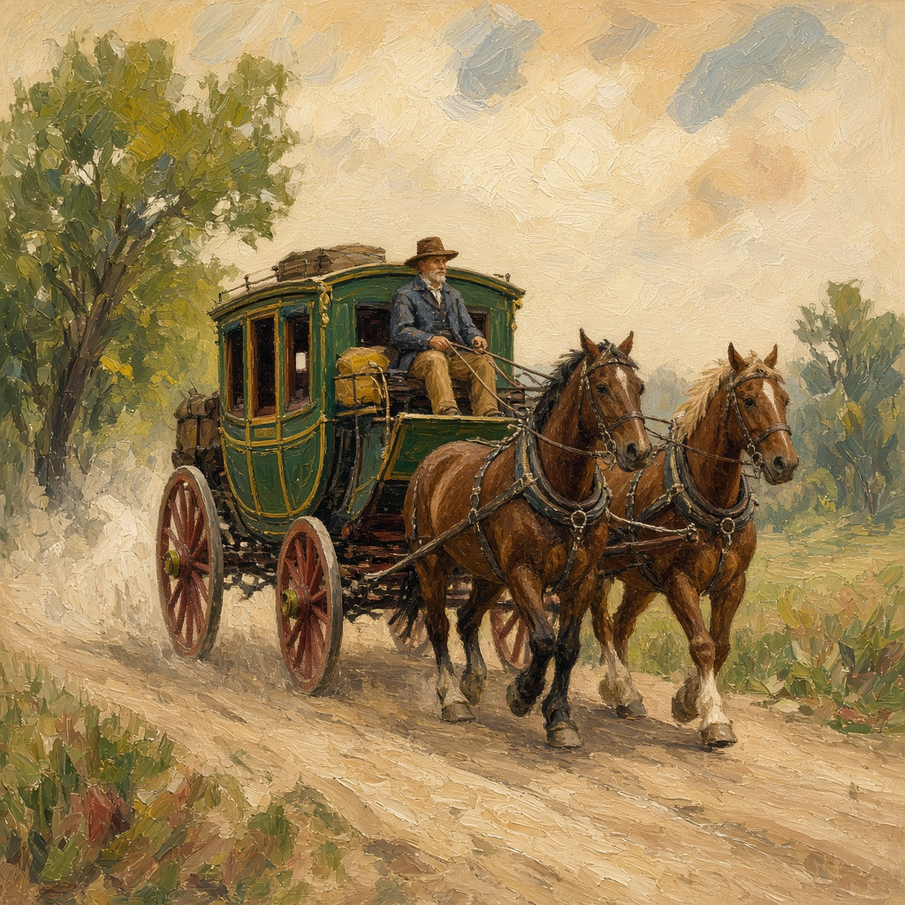
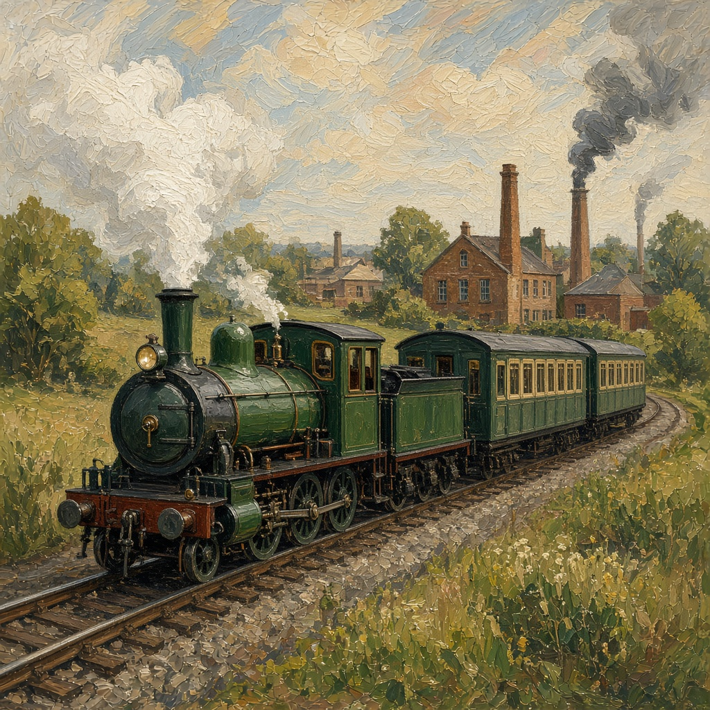
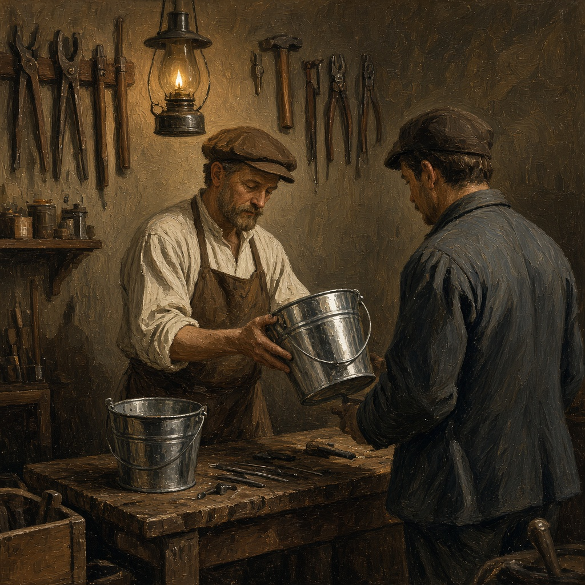
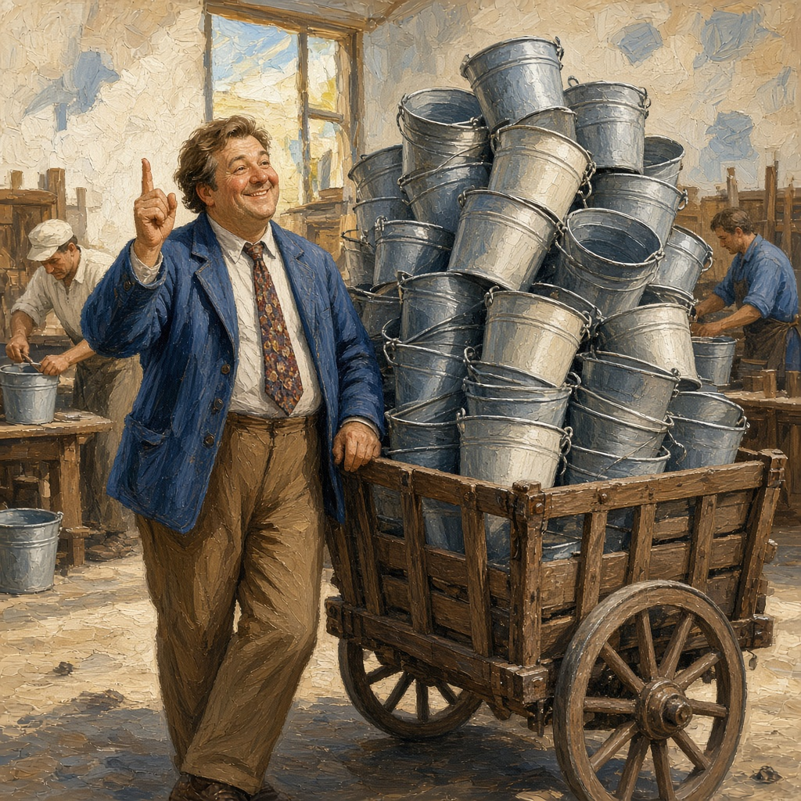

Before engines and after Life before engines and after them לפני המנועים ואחריהם החיים לפני המנועים ואחריהם
By the end of this page, say what engines changed in travel and in work. By the end of this page, explain what changed in travel and in work after engines were invented. בסוף העמוד תוכלו לומר מה המנועים שינו בנסיעה ובעבודה. בסוף העמוד תוכלו להסביר מה השתנה בנסיעות ובעבודה אחרי המצאת המנועים.
These pictures show life before engines and life after engines. Here are four pictures. Two show travel and work without an engine, and two show what happened when engines arrived. התמונות מראות את החיים לפני המנועים ואת החיים שאחריהם. לפניכם ארבע תמונות. שתיים מהן מראות נסיעה ומלאכה בלי מנוע, ושתיים מראות מה קרה כשהגיעו המנועים.




A task A task משימה משימה
Look at pictures 1 and 2. What changed in travel when engines were invented? Look at pictures 1 and 2. Explain what changed in travel after engines were invented. הסתכלו בתמונות 1 ו-2. מה השתנה בנסיעה כשהמציאו מנועים? התבוננו בתמונות 1 ו-2. הסבירו מה השתנה בנסיעה אחרי שהופיעו מנועים.
Which way is faster and easier? Which way is more comfortable, faster, and easier? איזו דרך מהירה וקלה יותר? איזו דרך נוחה יותר, מהירה יותר וקלה יותר?
Look at pictures 3 and 4. Why did the bucket factory leave the tinsmith without work? Look at pictures 3 and 4. Can you explain why the bucket factory left the tinsmith out of work? הסתכלו בתמונות 3 ו-4. למה בית החרושת לדליים השאיר את הפחח בלי עבודה? התבוננו בתמונות 3 ו-4. הסבירו מדוע בית החרושת לדליים השאיר את הפחח מחוסר עבודה.